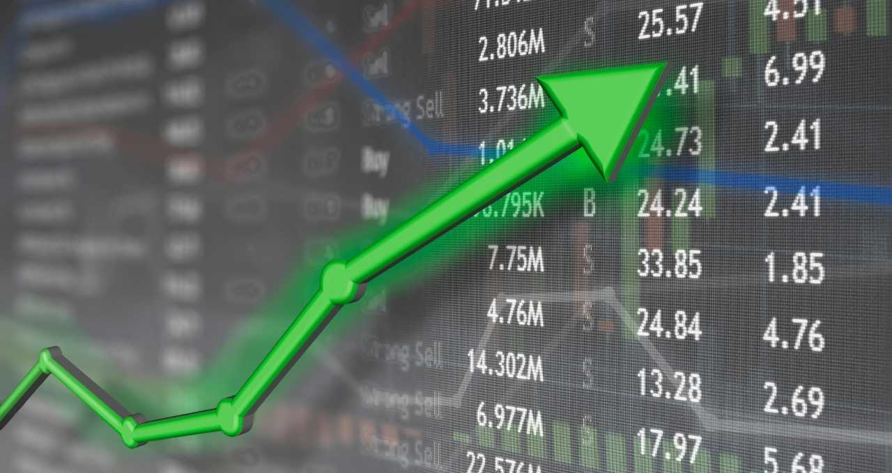
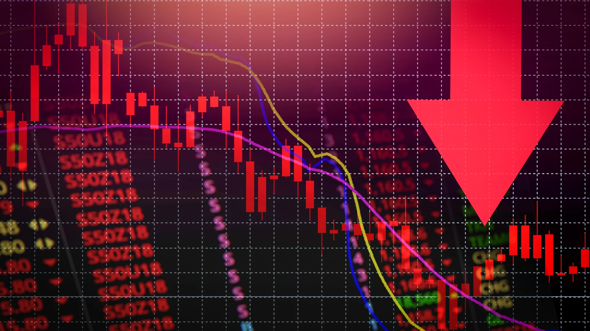

“Bolsa fecha em alta” e “Bolsa fecha em baixa”. Saiba o significado
2025
Seja você investidor ou não, é bem provável que já tenha ouvido essas expressões. É importantíssimo saber o que elas significam para compreender o funcionamento do mercado financeiro. Nesta página, vamos te explicar de forma simples e objetiva o que esses termos representam e como eles impactam os investimentos.
Bolsa fecha em alta
Dizer que a bolsa de valores fechou em alta quer dizer que o índice principal da bolsa de valores (a Ibovespa no caso do Brasil) terminou o dia com uma valorização em relação ao dia anterior. Isso significa que a média do desempenho das ações mais negociadas foi positivo, com mais pessoas comprando ações (que são basicamente “pedacinhos” que uma empresa disponibiliza na bolsa de valores para serem compradas) do que vendendo.
Bolsa fecha em baixa
Já quando a bolsa fecha baixa, isso quer dizer que o seu índice caiu em relação ao dia anterior. Ou seja, houve uma desvalorização do mercado porque, no geral, mais ações foram vendidas do que compradas.
É importante destacar que o fato de a bolsa fechar em alta ou em baixa não significa que todas as ações seguiram essa tendência. O índice reflete a média do desempenho das ações mais negociadas, mas cada empresa que vende suas ações pode ter variações próprias, independentemente do movimento geral do mercado. Então, pode acontecer da bolsa fechar em baixa e você estar “ganhando dinheiro” ou ela fechar em alta e você estar “perdendo dinheiro” dependendo das empresas que você comprou ações.
Como isso influencia na economia do país?
Muita gente não entende muito bem como a bolsa de valores funciona, e por isso acha que o fato dela fechar em alta ou em baixa não vai impactar sua vida. Mas, na verdade, esses movimentos têm um grande impacto na economia do país e nos seus investimentos, então é legal entender um pouco mais sobre isso, não só para entender a economia brasileira, mas também para entender como isso se refletirá nos seus investimentos!
No cenário da bolsa fechar em alta, considerando que o Ibovespa - o índice da Bovespa - indica o desempenho das empresas (em sua maioria, empresas muito relevantes no Brasil), isso pode significar que a economia brasileira, em geral, está no caminho certo.
Quando isso acontece, há mais expectativas positivas de rentabilidade no mercado, levando a mais investimentos na bolsa de valores (o que valoriza as ações), venda de novas ações por parte das empresas e atração de investidores estrangeiros, que passam a aplicar moedas internacionais como o dólar no nosso país, valorizando a economia nacional. Todos esses cenários podem impulsionar os seus investimentos.
No outro lado da moeda, se a bolsa fechar em baixa, isso pode significar que a economia está enfrentando dificuldades. Isso gera um sentimento de insegurança e pessimismo sobre o futuro, fazendo com que empresas e consumidores reduzam o gasto ou direcionem o seu dinheiro em alternativas mais seguras. Isso também pode fazer os investidores estrangeiros perderem a confiança na bolsa de valores brasileira, afastando seus investimentos do país, desvalorizando o Real e aumentando a inflação.
Destacando que todos esses efeitos não são unicamente determinados pela queda ou alta na bolsa de valores, mas depende também de muitos fatores externos, como o preço dos commodities, políticas do Banco Central ou internacionais. Ela serve como um termômetro importante do mercado financeiro e pode influenciar investimentos, empregos e o custo de vida no país.
Abaixo, você encontra as fontes que usamos para reunir as informações desta página:
Inteligências Artificiais (IA), como o ChatGPT e o Copilot, foram utilizadas nesta página para revisar e aprimorar a coesão do texto, garantindo mais fluidez e precisão nas informações.